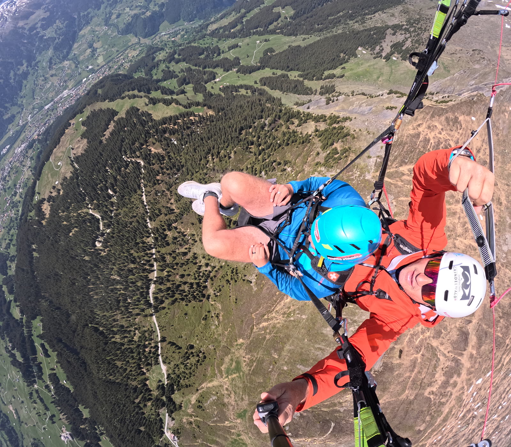
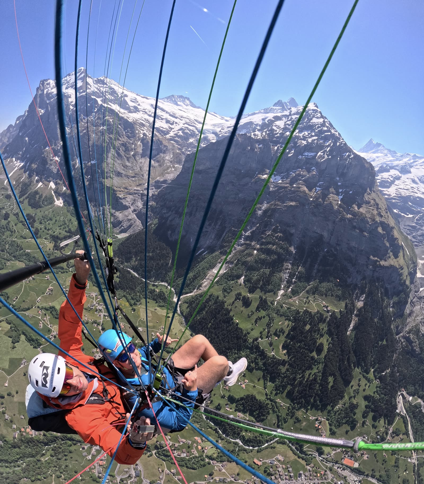
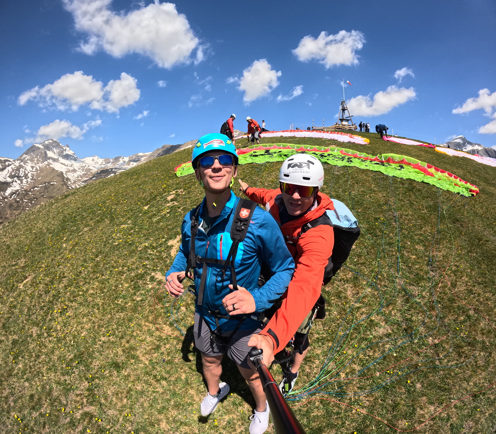

The beginningMy First Flight
My introduction to paragliding came as a tandem flight in Grindelwald, Switzerland, launching high above the valley with the Eiger and the surrounding peaks in every direction. Stepping off a mountainside and being held up by nothing but a wing and moving air is a strange kind of calm — equal parts adrenaline and stillness. It turned a one-time bucket-list ride into something I genuinely want to learn to do myself.
Watch my first flight
Personal footage from my tandem flight in Grindelwald (about 53 seconds).



The craftWhat Paragliding Requires
It looks effortless from the ground, but a safe flight is the product of a lot of judgment made before and during the launch.
Weather awareness
Reading wind, thermals, cloud development and how conditions change through the day.
Launch technique
Inflating and controlling the wing on the ground before committing to the air.
Canopy control
Active piloting — keeping the wing pressurised and overhead through changing air.
Landing judgment
Choosing an approach, managing the glide, and setting down softly on target.
Risk management
Knowing personal limits and when conditions say “not today.”
Equipment knowledge
Understanding the wing, harness, reserve and pre-flight checks.
The pathMy Learning Progression
How I’m thinking about getting from “tandem passenger” to a pilot who can fly safely on my own:
- Tandem flights & first exposure
- Experience real mountain flight from the air
- Get comfortable with launch, glide and landing sensations
- Watch how the pilot reads the conditions
- Ground handling
- Practice inflating and controlling the wing on the ground
- Build muscle memory for brake and weight-shift inputs
- Supervised solo (training-hill) flights
- Short, low flights under instructor radio guidance
- Repeat launches and landings until they’re consistent
- Building experience & weather skill
- Log flights across a range of safe conditions
- Learn micro-meteorology and site selection
InspirationWhy the Red Bull X-Alps Fascinates Me
The Red Bull X-Alps is the world’s toughest adventure race: athletes cross the Alps under their own power — hiking and paragliding — covering well over a thousand kilometres, sleeping little, and making constant decisions about weather and terrain. It’s the clearest example of how far skill, endurance and air-reading can take you, and it’s a big part of why I want to keep learning.
Official Red Bull X-Alps footage.
By the numbersParagliding by the Numbers — Reading the Weather
Every flight is a weather decision. Wind, temperature and changing conditions decide whether it’s a good day to launch — so I’m learning to read the data, not just the sky. Explore the live, interactive visualization below: hover, click and filter to see how weather data tells a story.
Live interactive weather visualization (Tableau Public) — the kind of conditions data every paraglider pilot learns to read.
NextWhere I Want to Go Next
- Take a proper introductory / ground-handling course with a certified school.
- Get comfortable with repeatable launches and landings on a training hill.
- Build the weather knowledge to fly safely and conservatively on my own.
- Someday, fly a real alpine site — and keep following the X-Alps every year.